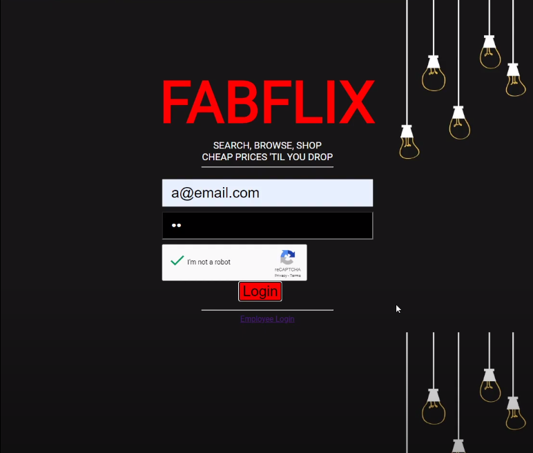
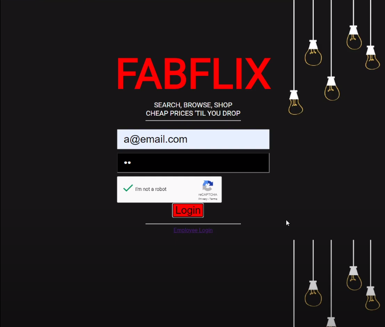
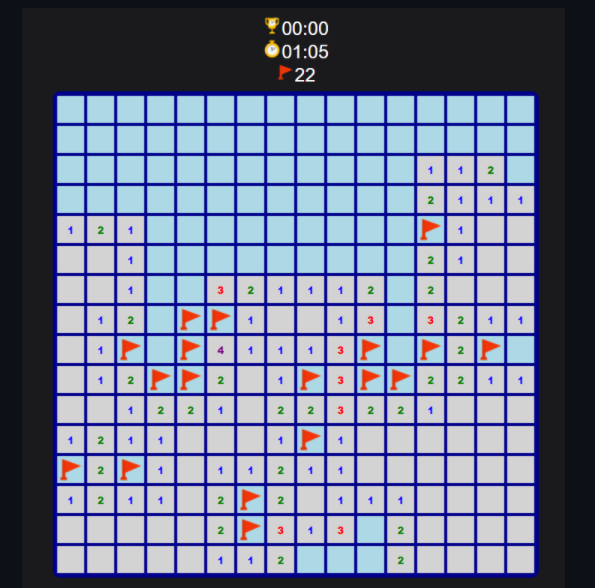
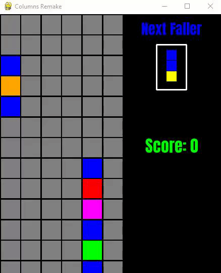
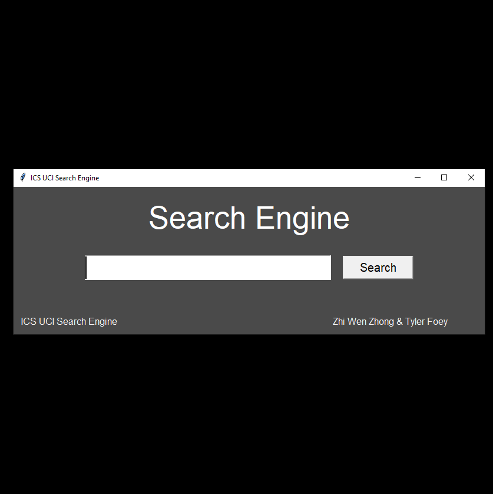

Fabflix is a Netflix-esque web-app where users are able login to browse, view, and checkout movies
Zhi Wen Zhong
Zhi Wen Zhong
UC Irvine Graduate
BSc in Computer Science
Software Engineer
Enjoy your stay

Fabflix is a Netflix-esque web-app where users are able login to browse, view, and checkout movies
Clone of Minesweeper with its classic difficulties and features such as a timer, flagging, double-click as well as a simple arcade leaderboard system
OpenGL render of infinite procedural terrain with chunk-based rendering using random perlin noise generated heightmaps

Clone of the 1989 Atari console game, Columns, a simple tile-matching game
ICS UCI Search Engine is a web crawler and search engine project that provides query results to a static collection of the "ics.uci.edu" domain
